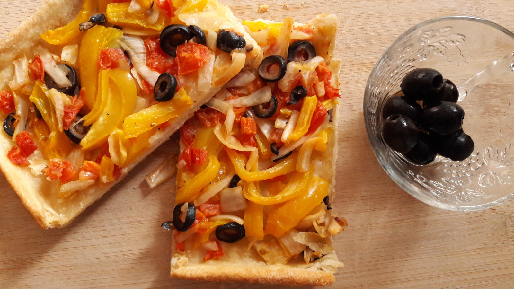

Coca de Trampó Mallorquina
- Preparación: 40 min
- Cocción: 35-40 min
- Porciones: 6-8 porciones
INGREDIENTES
BASE
- 1 taza (250 g) de agua
- ½ taza (120 g) de aceite de oliva ó canola
- 3-4 tazas de harina (450-600 g) de trigo de todo uso
- 1 pizca de sal
- 1 pizca de azúcar
TRAMPÓ
- 3 tomates (jitomates) grandes
- 2 pimientos
- 1 cebolla mediana
- 1 cucharadita de sal
- ¼ taza (60 g) de aceite de oliva
- 10-12 aceitunas (opcional)
- pimienta al gusto
DESCRIPCIÓN
La auténtica Coca de Trampó Mallorquina se prepara con manteca de cerdo. Personalmente prefiero la versión vegana, con aceite de oliva, aunque el de canola es también excelente opción. También prefiero añadir aceitunas negras, que le dan no solamente un sabor excepcional, sino también una estética inigualable. De elaboración sencilla y económica, la Coca de Trampó Mallorquina es un delicioso platillo que conjuga armoniosos sabores mediterráneos.
INSTRUCCIONES
- Precalentar el horno a 175 °C (350 °F).
- Para preparar la base mezclar el agua, aceite, harina, sal y azúcar en un recipiente hondo hasta obtener una masa que se despegue de los bordes. La cantidad de harina es aproximada, pues debe ajustarse hasta que la masa quede elástica, pero no pegajosa. Dejarla reposar 10 minutos antes de darle forma.
- Extender la masa con las manos en un recipiente para horno previmente engrasado de aproximadamente 37x28 cm (14.5x11 in). Estirarla hasta obtener una capa del grosor deseado. Un espesor ideal es de entre 3-5 mm, pero esto depende del gusto de cada persona.
- Para preparar el trampó picar la cebolla, tomates, aceitunas y pimientos, a los que se les debe quitar las semillas y venas. Aderezar con aceite de oliva, sal y un poco de pimienta recién molida. Mezclar y rectificar sal y pimienta si es necesario.
- Colocar el trampó sobre la base de manera uniforme. El jugo que habran soltado los vegetales se puede descartar, pero es necesario que el trampó no quede demasiado seco.
- Hornear aproximadamente 35-40 minutos, o hasta que la masa de la base se vea ligeramente dorada y se torne rígida. Sacar del horno, dejar enfriar y servir.